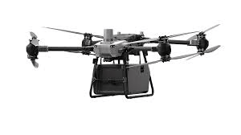
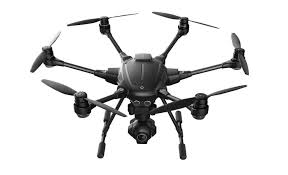
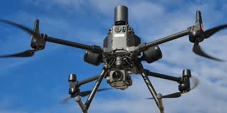

Tabla de Escaneabilidad de Drones en Construcción
| Dron | Tipo de Construcción | Terreno | Altura/Profundidad | Autonomía | Medición/Aplicación | Imagen |
|---|---|---|---|---|---|---|
| Multirrotor | Edificios, casas, puentes | Urbano/Rural | 120 m | 30 min | Fotografía aérea, inspección |  |
| Ala Fija | Grandes obras, carreteras | Extensiones grandes | 500 m | 2 h | Cartografía, monitoreo ambiental |  |
| Híbrido | Obras mixtas, zonas rurales | Mixto | 300 m | 1 h | Rescate, vigilancia, agricultura |  |
| Submarino | Infraestructura acuática | Acuático | 100 m (profundidad) | 4 h | Inspección marina |  |
| Carga | Industrial, logística | Industrial | 20 kg (carga) | 45 min | Transporte de materiales |  |
| FPV | Obras en competencia, recreativo | Competencia | 140 km/h (velocidad) | 10 min | Carreras, grabación dinámica |  |
| Hexacóptero | Inspección técnica, fotografía | Mixto | 200 m | 35 min | Fotografía profesional |  |
| Agricultura | Terrenos rurales, cultivos | Rural | 15 L (tanque) | 25 min | Pulverización, monitoreo |  |
| Vigilancia | Seguridad urbana | Urbano | 150 m | 40 min | Patrullaje, seguridad |  |
| Mapeo 3D | Modelado, arquitectura | Mixto | 250 m | 50 min | Modelado 3D, construcción |  |
Terrenos Y Referencia De Mapeos


Estudios Estadísticos
- Precisión de medición con drones multirrotor: ±3 cm en obras urbanas.
- Reducción de tiempo de levantamiento topográfico: hasta 70% usando drones de ala fija.
- Inspección de estructuras con drones hexacóptero: 98% de cobertura visual.
- Monitoreo de avance de obra con mapeo 3D: actualización diaria de modelos.
- Uso de drones submarinos: reducción de riesgos humanos en inspección marina.
- Optimización de logística con drones de carga: ahorro de hasta 30% en tiempo de entrega.
Terrenos y Medidas Comunes
| Tipo de Terreno | Medida Aproximada | Dron Recomendado | Plano Referencial |
|---|---|---|---|
| Solar urbano | 500 m² | Multirrotor, Hexacóptero | |
| Parcela agrícola | 5 ha | Ala fija, Agricultura | |
| Infraestructura acuática | 100 m profundidad | Submarino | |
| Obra industrial | 2,000 m² | Carga, Mapeo 3D |
Aplicaciones Avanzadas
- Fotogrametría: Generación de modelos 3D y ortomosaicos para estudios de obra.
- Inspección térmica: Detección de fugas y puntos críticos en edificaciones.
- Seguimiento de avance: Informes visuales periódicos para clientes y supervisores.
- Control de materiales: Inventario y seguimiento de suministros mediante drones de carga.
- Seguridad: Vigilancia de perímetros y zonas de acceso restringido.